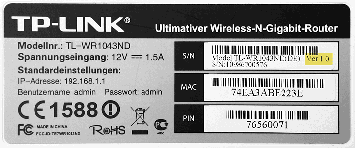

Die aktuelle Firmware findest du unter {{ site.firmware.base }}.
Bei fragen, komme in den Matrix Chat oder in schreib uns einer Mail an {{ site.community.mail_info }}.
Achtung: Alle TP-Link TL-WR7xx, TL-WR8xx und TL-WR9xx werden nicht unterstützt!
Hier findest du eine Liste unterstützter Router-Modelle und ihre entsprechenden Firmware Images.
Achtung! Beim Umstieg von einer anderen Firmware aus einer anderen Community unbedingt den Haken "Einstellungen behalten" ausschalten, also alle Einstellungen vergessen! Die Nord Firmware kann die Einstellungen nicht korrekt übernehmen.
Eine Anleitung die den Wechsel aus einer anderen Community erklärt findest du hier.
Die Freifunk-Firmware ist Freie Software. Sie basiert auf dem Gluon-Framework und OpenWrt und darf nach den Bestimmungen der GNU General Public License weiterverteilt und verändert werden.
Bei einigen Modellen gibt es mehrere Hardware Versionen. Ist dies bei deinem Modell der Fall, musst du die entsprechende Firmware anhand des Typenschilds unter dem Knoten auswählen.
Dieses Bild zeigt das Typenschild eines TP-Link TL-WR1043ND. Die Versionsangabe ist gelb markiert:

Sämtliche Firmware-Dateien findest du unter {{ site.firmware.base }}.
Das Gluon-Site-Repository befindet sich unter {{ site.firmware.gluon_site }}.
Beim Bauen der Firmware werden die Commit-Ids des gluon Repositories und des Site-Konfigurations-Repositories in der Firmware verankert. Diese Ids kann man in der Startseite der Erweiterten Einstellungen im Config Mode ersehen. Die Git Id ist genau der Commit auf dem die Firmware gebaut wurde. Falls dort ein Plus (+) am Ende erscheint ist dies der "Dirty"-Flag. Die Id wurde erzeugt mit
git describe --always --dirty=+
Für die Verwendung der Freifunk Firmware in Verbindung mit dem angebotenem Übergang ins Internet gelten unsere Nutzungsbedingungen.